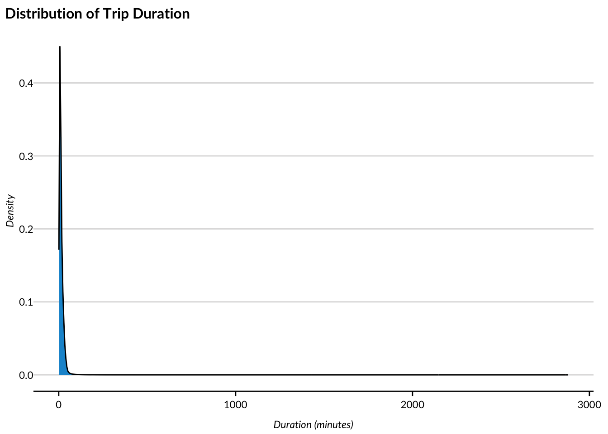
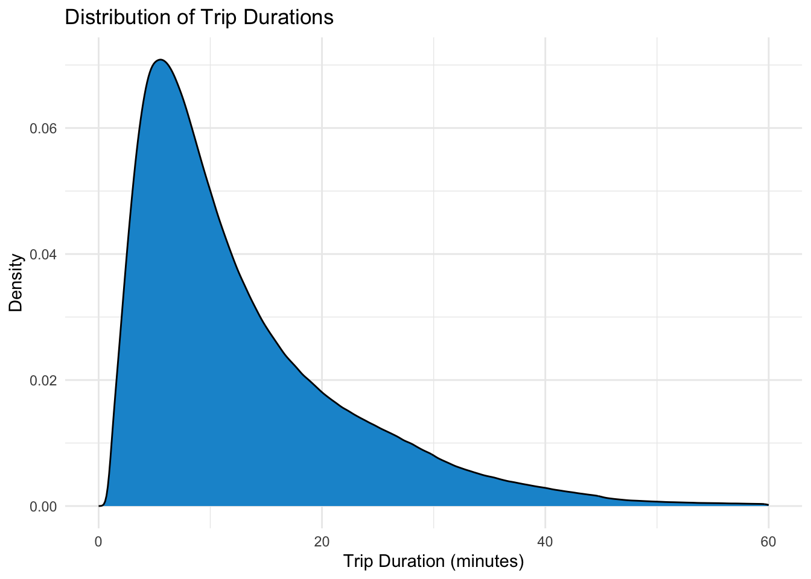
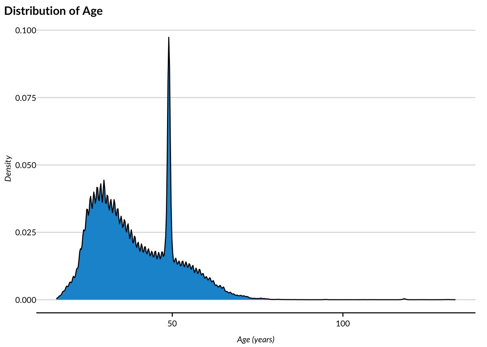
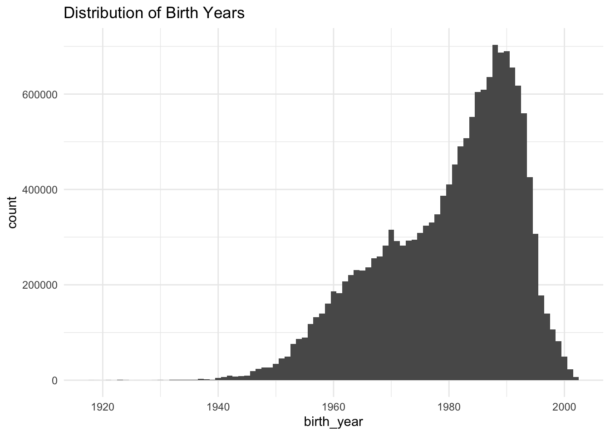

library(conflicted) #for managing function name conflicts
library(tidyverse) #for data manipulation and visualization
library(fs) #for file system operations
library(vroom) #for fast data reading
library(janitor) #for data cleaning and nicer tables
library(urbnthemes) #for urban institute chart styles
library(skimr) #for enhanced data summaries
conflicts_prefer(dplyr::filter)
options(
scipen = 999,
pillar.sigfig = 10
)
set_urbn_defaults(style = "print")Final Project: Citi Bikes
Introduction
The Citi Bike program is a bike-sharing system in New York City that allows users to rent bicycles for short trips around the city. The program has become increasingly popular since its launch in 2013, with millions of rides taken each year. In this project, we will analyze Citi Bike trip data for 2018 to gain insights into usage patterns, popular routes, and user profiles.
The primary operational goal is to optimize bike distribution across stations to meet demand. Bike turnover time is a critical metric for this purpose, as it indicates how frequently bikes are rented and returned at each station. By analyzing trip duration, start and end locations, and user demographics, we can identify high-demand stations and times of day, allowing for better allocation and re-balancing of bikes and improved service for users. Monthly operational reports can be found at https://citibikenyc.com/system-data/operating-reports.
In 2018, Citi Bike offered two main rider types: Subscribers and Customers. Subscribers paid an annual membership fee of $169 for unlimited rides up to 45 minutes each. The overage fee for subscribers was $2.50 for each additional 15 minutes. Customers paid $3 for a single ride of 30 minutes or less, or $12 for a day pass including unlimited 30-minute rides within 24 hours. The overage fee for customers was $4 for each additional 15 minutes. Understanding the differences in usage patterns between these two groups can help inform pricing strategies and service improvements.
Data Source
The data for this analysis is sourced from the Citi Bike system’s public data repository (https://citibikenyc.com/system-data), which provides monthly trip data in CSV format. The dataset includes information such as trip duration, start and end stations, user type (subscriber or customer), and timestamps for each trip.
Data Dictionary
tripduration: Duration of the trip in secondsstarttime: Timestamp for when the trip startedstoptime: Timestamp for when the trip endedstart station id: Unique identifier for the starting stationstart station name: Name of the starting stationend station id: Unique identifier for the ending stationend station name: Name of the ending stationbikeid: Unique identifier for the bike usedusertype: Type of user (Subscriber or Customer)birth year: Birth year of the usergender: Gender of the user
Data Loading and Preparation
Load required packages
Load the Citi Bike data for 2018
citibike_2018_raw <-
dir_ls("data/monthly", glob = "*.csv") |>
vroom()
nrow(citibike_2018_raw)[1] 17548339head(citibike_2018_raw)# A tibble: 6 × 15
tripduration starttime stoptime `start station id`
<dbl> <dttm> <dttm> <dbl>
1 970 2018-01-01 13:50:57 2018-01-01 14:07:08 72
2 723 2018-01-01 15:33:30 2018-01-01 15:45:33 72
3 496 2018-01-01 15:39:18 2018-01-01 15:47:35 72
4 306 2018-01-01 15:40:13 2018-01-01 15:45:20 72
5 306 2018-01-01 18:14:51 2018-01-01 18:19:57 72
6 1602 2018-01-01 21:31:54 2018-01-01 21:58:36 72
# ℹ 11 more variables: `start station name` <chr>,
# `start station latitude` <dbl>, `start station longitude` <dbl>,
# `end station id` <dbl>, `end station name` <chr>,
# `end station latitude` <dbl>, `end station longitude` <dbl>, bikeid <dbl>,
# usertype <chr>, `birth year` <dbl>, gender <dbl>Clean names and column types
citibike_2018 <- citibike_2018_raw |>
clean_names() |>
mutate(
gender = factor(gender, levels = c(0, 1, 2), labels = c("Unknown", "Male", "Female")),
usertype = factor(usertype),
across(ends_with("id"), as.character)
)
glimpse(citibike_2018)Rows: 17,548,339Columns: 15
$ tripduration <dbl> 970, 723, 496, 306, 306, 1602, 722, 434, 366, …
$ starttime <dttm> 2018-01-01 13:50:57, 2018-01-01 15:33:30, 201…
$ stoptime <dttm> 2018-01-01 14:07:08, 2018-01-01 15:45:33, 201…
$ start_station_id <chr> "72", "72", "72", "72", "72", "72", "72", "72"…
$ start_station_name <chr> "W 52 St & 11 Ave", "W 52 St & 11 Ave", "W 52 …
$ start_station_latitude <dbl> 40.76727, 40.76727, 40.76727, 40.76727, 40.767…
$ start_station_longitude <dbl> -73.99393, -73.99393, -73.99393, -73.99393, -7…
$ end_station_id <chr> "505", "3255", "525", "447", "3356", "482", "2…
$ end_station_name <chr> "6 Ave & W 33 St", "8 Ave & W 31 St", "W 34 St…
$ end_station_latitude <dbl> 40.74901, 40.75059, 40.75594, 40.76371, 40.774…
$ end_station_longitude <dbl> -73.98848, -73.99468, -74.00212, -73.98516, -7…
$ bikeid <chr> "31956", "32536", "16069", "31781", "30319", "…
$ usertype <fct> Subscriber, Subscriber, Subscriber, Subscriber…
$ birth_year <dbl> 1992, 1969, 1956, 1974, 1992, 1968, 1978, 1983…
$ gender <fct> Male, Male, Male, Male, Male, Male, Male, Male…Create calculated variables
citibike_2018 <- citibike_2018 |>
mutate(
tripduration_min = tripduration / 60,
month = month(starttime, label = TRUE),
day_of_week = wday(starttime, label = TRUE),
weekday_weekend = factor(if_else(
day_of_week %in% c("Sat", "Sun"), "Weekend", "Weekday"
)),
hour_of_day = hour(starttime),
time_of_day = case_when(
hour_of_day >= 5 & hour_of_day < 9 ~ "Morning",
hour_of_day >= 9 & hour_of_day < 12 ~ "Late Morning",
hour_of_day >= 12 & hour_of_day < 17 ~ "Afternoon",
hour_of_day >= 17 & hour_of_day < 21 ~ "Evening",
TRUE ~ "Night"
),
time_of_day = factor(
time_of_day,
levels = c("Morning", "Late Morning", "Afternoon", "Evening", "Night"),
ordered = TRUE
),
approx_age = 2018 - birth_year,
round_trip = if_else(start_station_id == end_station_id, TRUE, FALSE),
usertype = fct_rev(usertype)
)Reorder columns for easier viewing
citibike_2018 <- citibike_2018 |>
relocate(
tripduration,
tripduration_min,
starttime,
stoptime,
month,
day_of_week,
weekday_weekend,
hour_of_day,
time_of_day,
start_station_id,
start_station_name,
start_station_latitude,
start_station_longitude,
end_station_id,
end_station_name,
end_station_latitude,
end_station_longitude,
round_trip,
bikeid,
usertype,
birth_year,
approx_age,
gender
)Exploratory data analysis
Summary parameters
summary(citibike_2018) tripduration tripduration_min starttime
Min. : 61.0 Min. : 1.02 Min. :2018-01-01 00:01:50
1st Qu.: 358.0 1st Qu.: 5.97 1st Qu.:2018-05-08 21:14:05
Median : 605.0 Median : 10.08 Median :2018-07-19 16:46:36
Mean : 988.7 Mean : 16.48 Mean :2018-07-16 04:41:19
3rd Qu.: 1060.0 3rd Qu.: 17.67 3rd Qu.:2018-09-27 14:52:05
Max. :19510049.0 Max. :325167.48 Max. :2018-12-31 23:59:51
stoptime month day_of_week
Min. :2018-01-01 00:05:07 Aug :1977177 Sun:1985040
1st Qu.:2018-05-08 21:31:18 Jun :1953103 Mon:2535365
Median :2018-07-19 17:03:37 Jul :1913625 Tue:2699319
Mean :2018-07-16 04:57:48 Oct :1878657 Wed:2737696
3rd Qu.:2018-09-27 15:07:04 Sep :1877884 Thu:2738252
Max. :2019-01-08 08:39:45 May :1824710 Fri:2602411
(Other):6123183 Sat:2250256
weekday_weekend hour_of_day time_of_day start_station_id
Weekday:13313043 Min. : 0.00 Morning :2716502 Length:17548339
Weekend: 4235296 1st Qu.:10.00 Late Morning:2724474 Class :character
Median :15.00 Afternoon :5302883 Mode :character
Mean :13.89 Evening :5234605
3rd Qu.:18.00 Night :1569875
Max. :23.00
start_station_name start_station_latitude start_station_longitude
Length:17548339 Min. :40.65 Min. :-74.03
Class :character 1st Qu.:40.72 1st Qu.:-74.00
Mode :character Median :40.74 Median :-73.99
Mean :40.74 Mean :-73.98
3rd Qu.:40.76 3rd Qu.:-73.97
Max. :45.51 Max. :-73.57
end_station_id end_station_name end_station_latitude
Length:17548339 Length:17548339 Min. :40.65
Class :character Class :character 1st Qu.:40.72
Mode :character Mode :character Median :40.74
Mean :40.74
3rd Qu.:40.76
Max. :45.51
end_station_longitude round_trip bikeid
Min. :-74.08 Mode :logical Length:17548339
1st Qu.:-74.00 FALSE:17198742 Class :character
Median :-73.99 TRUE :347100 Mode :character
Mean :-73.98 NA's :2497
3rd Qu.:-73.97
Max. :-73.57
usertype birth_year approx_age gender
Subscriber:15614825 Min. :1885 Min. : 16.00 Unknown: 1484555
Customer : 1933514 1st Qu.:1969 1st Qu.: 29.00 Male :11971322
Median :1981 Median : 37.00 Female : 4092462
Mean :1979 Mean : 39.01
3rd Qu.:1989 3rd Qu.: 49.00
Max. :2002 Max. :133.00
citibike_2018 |>
skim()| Name | citibike_2018 |
| Number of rows | 17548339 |
| Number of columns | 23 |
| _______________________ | |
| Column type frequency: | |
| character | 5 |
| factor | 6 |
| logical | 1 |
| numeric | 9 |
| POSIXct | 2 |
| ________________________ | |
| Group variables | None |
Variable type: character
| skim_variable | n_missing | complete_rate | min | max | empty | n_unique | whitespace |
|---|---|---|---|---|---|---|---|
| start_station_id | 2497 | 1 | 2 | 4 | 0 | 818 | 0 |
| start_station_name | 0 | 1 | 4 | 46 | 0 | 822 | 0 |
| end_station_id | 2497 | 1 | 2 | 4 | 0 | 850 | 0 |
| end_station_name | 0 | 1 | 4 | 46 | 0 | 854 | 0 |
| bikeid | 0 | 1 | 5 | 5 | 0 | 15244 | 0 |
Variable type: factor
| skim_variable | n_missing | complete_rate | ordered | n_unique | top_counts |
|---|---|---|---|---|---|
| month | 0 | 1 | TRUE | 12 | Aug: 1977177, Jun: 1953103, Jul: 1913625, Oct: 1878657 |
| day_of_week | 0 | 1 | TRUE | 7 | Thu: 2738252, Wed: 2737696, Tue: 2699319, Fri: 2602411 |
| weekday_weekend | 0 | 1 | FALSE | 2 | Wee: 13313043, Wee: 4235296 |
| time_of_day | 0 | 1 | TRUE | 5 | Aft: 5302883, Eve: 5234605, Lat: 2724474, Mor: 2716502 |
| usertype | 0 | 1 | FALSE | 2 | Sub: 15614825, Cus: 1933514 |
| gender | 0 | 1 | FALSE | 3 | Mal: 11971322, Fem: 4092462, Unk: 1484555 |
Variable type: logical
| skim_variable | n_missing | complete_rate | mean | count |
|---|---|---|---|---|
| round_trip | 2497 | 1 | 0.02 | FAL: 17198742, TRU: 347100 |
Variable type: numeric
| skim_variable | n_missing | complete_rate | mean | sd | p0 | p25 | p50 | p75 | p100 | hist |
|---|---|---|---|---|---|---|---|---|---|---|
| tripduration | 0 | 1 | 988.74 | 18895.84 | 61.00 | 358.00 | 605.00 | 1060.00 | 19510049.00 | ▇▁▁▁▁ |
| tripduration_min | 0 | 1 | 16.48 | 314.93 | 1.02 | 5.97 | 10.08 | 17.67 | 325167.48 | ▇▁▁▁▁ |
| hour_of_day | 0 | 1 | 13.89 | 4.85 | 0.00 | 10.00 | 15.00 | 18.00 | 23.00 | ▁▅▅▇▃ |
| start_station_latitude | 0 | 1 | 40.74 | 0.03 | 40.65 | 40.72 | 40.74 | 40.76 | 45.51 | ▇▁▁▁▁ |
| start_station_longitude | 0 | 1 | -73.98 | 0.02 | -74.03 | -74.00 | -73.99 | -73.97 | -73.57 | ▇▁▁▁▁ |
| end_station_latitude | 0 | 1 | 40.74 | 0.03 | 40.65 | 40.72 | 40.74 | 40.76 | 45.51 | ▇▁▁▁▁ |
| end_station_longitude | 0 | 1 | -73.98 | 0.02 | -74.08 | -74.00 | -73.99 | -73.97 | -73.57 | ▇▅▁▁▁ |
| birth_year | 0 | 1 | 1978.99 | 11.93 | 1885.00 | 1969.00 | 1981.00 | 1989.00 | 2002.00 | ▁▁▁▆▇ |
| approx_age | 0 | 1 | 39.01 | 11.93 | 16.00 | 29.00 | 37.00 | 49.00 | 133.00 | ▇▆▁▁▁ |
Variable type: POSIXct
| skim_variable | n_missing | complete_rate | min | max | median | n_unique |
|---|---|---|---|---|---|---|
| starttime | 0 | 1 | 2018-01-01 00:01:50 | 2018-12-31 23:59:51 | 2018-07-19 16:46:36 | 17539104 |
| stoptime | 0 | 1 | 2018-01-01 00:05:07 | 2019-01-08 08:39:45 | 2018-07-19 17:03:37 | 17539219 |
Trip duration density plot (excluding extreme values)
citibike_2018 |>
filter(tripduration_min < 2880) |>
ggplot(aes(x = tripduration_min)) +
geom_density() +
labs(title = "Distribution of Trip Duration",
x = "Duration (minutes)",
y = "Density")
Zoom in on trip duration
citibike_2018 |>
ggplot(aes(x = tripduration_min)) +
geom_density() +
labs(
title = "Distribution of Trip Durations",
x = "Trip Duration (minutes)",
y = "Density"
) +
xlim(0, 60)
Age distribution
ggplot(citibike_2018, aes(x = approx_age)) +
geom_density() +
labs(title = "Distribution of Age",
x = "Age (years)",
y = "Density")
citibike_2018 |>
ggplot(aes(x = birth_year)) +
geom_histogram(binwidth = 1) +
labs(title = "Distribution of Birth Years")
citibike_2018 |>
count(birth_year, sort = TRUE) |>
slice(1) |>
pull(birth_year)[1] 1969citibike_2018 |>
filter(
!is.na(round_trip),
!is.na(birth_year),
birth_year >= 1918,
tripduration_min <= 2880,
gender != "Unknown"
) |>
ggplot(aes(x = birth_year)) +
geom_histogram(binwidth = 1) +
labs(title = "Distribution of Birth Years")
citibike_2018 |>
filter(
!is.na(round_trip),
!is.na(birth_year),
birth_year >= 1918,
tripduration_min <= 2880,
gender != "Unknown"
) |>
summary() tripduration tripduration_min starttime
Min. : 61.0 Min. : 1.017 Min. :2018-01-01 00:01:50
1st Qu.: 347.0 1st Qu.: 5.783 1st Qu.:2018-05-08 08:34:52
Median : 575.0 Median : 9.583 Median :2018-07-20 08:25:19
Mean : 792.7 Mean : 13.212 Mean :2018-07-16 10:52:59
3rd Qu.: 984.0 3rd Qu.: 16.400 3rd Qu.:2018-09-29 12:32:19
Max. :172782.0 Max. :2879.700 Max. :2018-12-31 23:59:51
stoptime month day_of_week
Min. :2018-01-01 00:05:07 Aug :1769633 Sun:1707997
1st Qu.:2018-05-08 08:49:09 Oct :1752022 Mon:2351737
Median :2018-07-20 08:39:03 Jun :1749891 Tue:2535709
Mean :2018-07-16 11:06:12 Sep :1702898 Wed:2565781
3rd Qu.:2018-09-29 12:48:56 Jul :1701736 Thu:2560931
Max. :2019-01-02 13:22:10 May :1623528 Fri:2402305
(Other):5750810 Sat:1926058
weekday_weekend hour_of_day time_of_day start_station_id
Weekday:12416463 Min. : 0.00 Morning :2634345 Length:16050518
Weekend: 3634055 1st Qu.:10.00 Late Morning:2483236 Class :character
Median :14.00 Afternoon :4646409 Mode :character
Mean :13.85 Evening :4845483
3rd Qu.:18.00 Night :1441045
Max. :23.00
start_station_name start_station_latitude start_station_longitude
Length:16050518 Min. :40.65 Min. :-74.03
Class :character 1st Qu.:40.72 1st Qu.:-74.00
Mode :character Median :40.74 Median :-73.99
Mean :40.74 Mean :-73.98
3rd Qu.:40.76 3rd Qu.:-73.97
Max. :45.51 Max. :-73.57
end_station_id end_station_name end_station_latitude
Length:16050518 Length:16050518 Min. :40.65
Class :character Class :character 1st Qu.:40.72
Mode :character Mode :character Median :40.74
Mean :40.74
3rd Qu.:40.76
Max. :45.51
end_station_longitude round_trip bikeid
Min. :-74.08 Mode :logical Length:16050518
1st Qu.:-74.00 FALSE:15785257 Class :character
Median :-73.99 TRUE :265261 Mode :character
Mean :-73.98
3rd Qu.:-73.97
Max. :-73.57
usertype birth_year approx_age gender
Subscriber:15298505 Min. :1918 Min. : 16.00 Unknown: 0
Customer : 752013 1st Qu.:1972 1st Qu.: 29.00 Male :11959708
Median :1983 Median : 35.00 Female : 4090810
Mean :1980 Mean : 38.11
3rd Qu.:1989 3rd Qu.: 46.00
Max. :2002 Max. :100.00
citibike_2018 |>
filter(
!is.na(round_trip),
!is.na(birth_year),
birth_year >= 1918,
tripduration_min <= 2880,
gender != "Unknown"
) |>
skim()| Name | filter(…) |
| Number of rows | 16050518 |
| Number of columns | 23 |
| _______________________ | |
| Column type frequency: | |
| character | 5 |
| factor | 6 |
| logical | 1 |
| numeric | 9 |
| POSIXct | 2 |
| ________________________ | |
| Group variables | None |
Variable type: character
| skim_variable | n_missing | complete_rate | min | max | empty | n_unique | whitespace |
|---|---|---|---|---|---|---|---|
| start_station_id | 0 | 1 | 2 | 4 | 0 | 818 | 0 |
| start_station_name | 0 | 1 | 6 | 46 | 0 | 821 | 0 |
| end_station_id | 0 | 1 | 2 | 4 | 0 | 846 | 0 |
| end_station_name | 0 | 1 | 6 | 46 | 0 | 849 | 0 |
| bikeid | 0 | 1 | 5 | 5 | 0 | 15010 | 0 |
Variable type: factor
| skim_variable | n_missing | complete_rate | ordered | n_unique | top_counts |
|---|---|---|---|---|---|
| month | 0 | 1 | TRUE | 12 | Aug: 1769633, Oct: 1752022, Jun: 1749891, Sep: 1702898 |
| day_of_week | 0 | 1 | TRUE | 7 | Wed: 2565781, Thu: 2560931, Tue: 2535709, Fri: 2402305 |
| weekday_weekend | 0 | 1 | FALSE | 2 | Wee: 12416463, Wee: 3634055 |
| time_of_day | 0 | 1 | TRUE | 5 | Eve: 4845483, Aft: 4646409, Mor: 2634345, Lat: 2483236 |
| usertype | 0 | 1 | FALSE | 2 | Sub: 15298505, Cus: 752013 |
| gender | 0 | 1 | FALSE | 2 | Mal: 11959708, Fem: 4090810, Unk: 0 |
Variable type: logical
| skim_variable | n_missing | complete_rate | mean | count |
|---|---|---|---|---|
| round_trip | 0 | 1 | 0.02 | FAL: 15785257, TRU: 265261 |
Variable type: numeric
| skim_variable | n_missing | complete_rate | mean | sd | p0 | p25 | p50 | p75 | p100 | hist |
|---|---|---|---|---|---|---|---|---|---|---|
| tripduration | 0 | 1 | 792.74 | 1539.02 | 61.00 | 347.00 | 575.00 | 984.00 | 172782.00 | ▇▁▁▁▁ |
| tripduration_min | 0 | 1 | 13.21 | 25.65 | 1.02 | 5.78 | 9.58 | 16.40 | 2879.70 | ▇▁▁▁▁ |
| hour_of_day | 0 | 1 | 13.85 | 4.90 | 0.00 | 10.00 | 14.00 | 18.00 | 23.00 | ▁▅▅▇▃ |
| start_station_latitude | 0 | 1 | 40.74 | 0.03 | 40.65 | 40.72 | 40.74 | 40.76 | 45.51 | ▇▁▁▁▁ |
| start_station_longitude | 0 | 1 | -73.98 | 0.02 | -74.03 | -74.00 | -73.99 | -73.97 | -73.57 | ▇▁▁▁▁ |
| end_station_latitude | 0 | 1 | 40.74 | 0.03 | 40.65 | 40.72 | 40.74 | 40.76 | 45.51 | ▇▁▁▁▁ |
| end_station_longitude | 0 | 1 | -73.98 | 0.02 | -74.08 | -74.00 | -73.99 | -73.97 | -73.57 | ▇▅▁▁▁ |
| birth_year | 0 | 1 | 1979.89 | 11.87 | 1918.00 | 1972.00 | 1983.00 | 1989.00 | 2002.00 | ▁▁▃▇▇ |
| approx_age | 0 | 1 | 38.11 | 11.87 | 16.00 | 29.00 | 35.00 | 46.00 | 100.00 | ▇▇▃▁▁ |
Variable type: POSIXct
| skim_variable | n_missing | complete_rate | min | max | median | n_unique |
|---|---|---|---|---|---|---|
| starttime | 0 | 1 | 2018-01-01 00:01:50 | 2018-12-31 23:59:51 | 2018-07-20 08:25:19 | 16042755 |
| stoptime | 0 | 1 | 2018-01-01 00:05:07 | 2019-01-02 13:22:10 | 2018-07-20 08:39:03 | 16042901 |
citibike_2018 <-
citibike_2018 |>
filter(
!is.na(round_trip),
!is.na(birth_year),
birth_year >= 1918,
tripduration_min <= 2880,
gender != "Unknown"
)Save data
write_csv(citibike_2018_raw, "data/combined/citibike_2018_full.csv")
write_rds(citibike_2018_raw, "data/combined/citibike_2018_full.rds")
write_csv(citibike_2018, "data/combined/citibike_2018_transformed.csv")
write_rds(citibike_2018, "data/combined/citibike_2018_transformed.rds")Create sample
Create a random sample of 1000 rows
set.seed(557)
citibike_sample_2018 <-
citibike_2018 |>
slice_sample(n = 1000)Write sample to file
write_csv(citibike_sample_2018, "data/sample/citibike_2018_sample_1000.csv")
write_rds(citibike_sample_2018, "data/sample/citibike_2018_sample_1000.rds")Continued analysis is performed in a separate notebook using the sample data for faster processing. The sample data analysis can be found at https://rberini.github.io/ST557_Final_Project/ST557_Citi_Bikes_Sample.html.